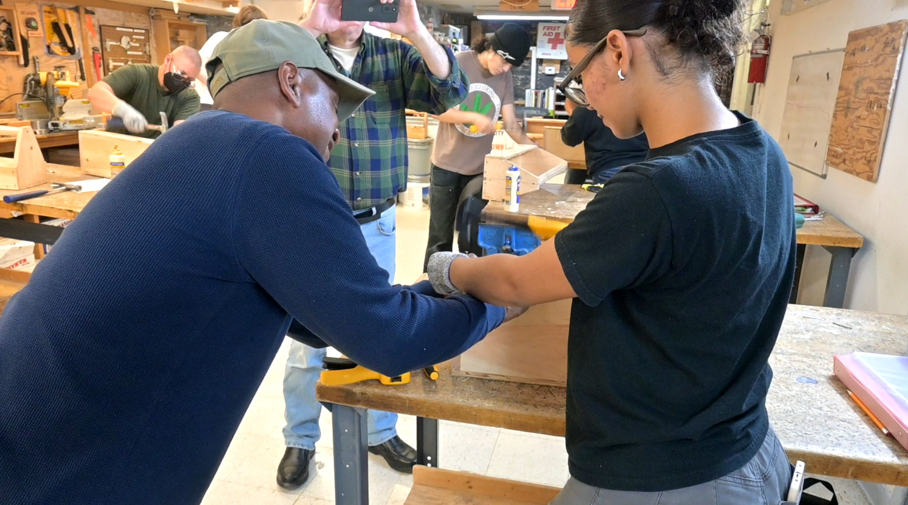

ZONE OF PROXIMAL DEVELOPMENT / FIELD STUDY 01
Learning in
the swing.
A small window into how a craft skill takes shape: a journeyman nearby, an apprentice at the work, and one nail at a time.
EVENT 03 · 02:41—04:15
Move through selected moments from the annotated video. Each still is a real frame; each label comes from the project’s annotation sheet.
CARPENTRY WORKSHOP · HAMMERING NAILSOBSERVATION WINDOW
One attempt, frame by frame

SOURCE FRAME
0249.jpg
VIDEO TIME
02:49
01 / 23
SELECTED ANNOTATED MOMENTS · NOT EVERY FRAME IS SHOWN
SELECT A DOT TO EXPLOREA WAY OF SEEING
From a busy workshop to a few moving parts.
The annotations turn a continuous scene into people, activities, tools, conditions, and time. This little viewer makes those choices visible—and invites a closer look at what was observed, what was coded, and what remains uncertain.